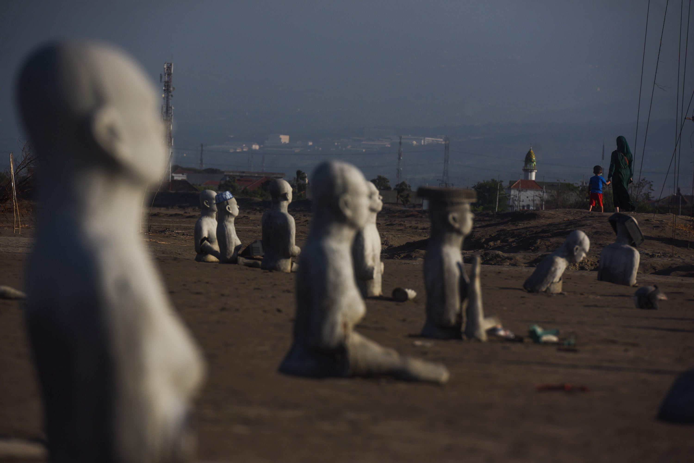

Tourist Places
Pari Temple
Pari Temple is a temple located about 2 km to the northwest from the center of Lapindo Mud. This temple is located in Candi Pari Village, Porong sub-district, Sidoarjo Regency. This temple is a temple with a square brick building, facing west with a threshold and the gate is made by natural andesite stone. The architectural style of the Pari temples is influenced by the Campa culture, which is or is Vietnam today, especially the temples at Mison. This influence can be seen in the buildings and ornaments, but Candi Pari still shows Indonesian character.
Lapindo Mud

The Lapindo Mud Zone is located in Porong Sidoarjo District, an area that was once a residential area and an industrial area, submerged under the mud of PT. Lapindo due to wrong procedures during drilling. Currently the Lapindo area is used as a tourist attraction, for tourists from outside the city who want to see the muddy area, many have come to this area. The hot weather and the arid ground, the occasional burst of gas from the blast is a sight that can be enjoyed.